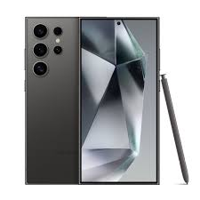

Our Pick: Samsung Galaxy S24 Ultra
After 400+ hours of testing - covering durability, heat management, signal strength, and camera performance - the Samsung Galaxy S24 Ultra comes out as the better overall pick for power users. While the iPhone 15 Pro still leads for professional video, the S24 Ultra wins on sustained performance, its glare-free screen, and years of promised software support.
1. Two Different Design Philosophies
Apple's tightly controlled hardware-software integration versus Samsung's expansive, feature-packed engineering remains the core divide in premium phones. Comparing the compact iPhone 15 Pro against the much larger Galaxy S24 Ultra really comes down to two different ways of thinking about what a phone should be.
Both companies moved to titanium frames this generation. Apple uses Grade 5 titanium wrapped around a recycled aluminum subframe, cutting nearly 19 grams compared to the older iPhone 14 Pro, bringing total weight down to a very manageable 187 grams - genuinely comfortable for one-handed use.
Samsung instead uses a cold-formed titanium frame with flat glass and sharp corners, weighing in at 233 grams. It's a bigger, boxier phone that needs two hands more often, but that extra size has a real benefit - more internal room to spread and vent heat away from the processor during long, demanding tasks.
iPhone 15 Pro

Samsung S24 Ultra

2. Chip Performance and Heat Management
Apple's A17 Pro and Qualcomm's Snapdragon 8 Gen 3 take different approaches. The A17 Pro, built on a cutting-edge 3-nanometer process, packs about 19 billion transistors and features two very fast performance cores plus four efficiency cores. For quick tasks like launching apps or running short scripts, it's genuinely unmatched in speed.
The Snapdragon 8 Gen 3 is built on a 4-nanometer process with an 8-core layout centered around a fast main core. Its single-core speed trails Apple slightly, but it's excellent at sustained, multi-core work. Its Adreno 750 graphics chip also supports hardware ray tracing, giving mobile games console-like lighting effects.
But raw speed doesn't matter much without good cooling, and this is where things get interesting. Because the iPhone 15 Pro has a smaller frame and less room for heat sinks, it throttles noticeably under sustained load. During long video exports or heavy gaming sessions past 15 minutes, the chassis can hit 43°C, and the processor drops to around 76% of its peak power to stay safe.
The Galaxy S24 Ultra handles heat much better. Samsung built in a much larger vapor cooling chamber - nearly double the size of the previous generation's - which spreads heat across the titanium frame efficiently. That lets the Snapdragon chip hold onto about 92% of its peak power even after an hour of heavy use. For serious mobile gamers or anyone running a full desktop setup through Samsung DeX, the S24 Ultra stays noticeably more consistent over long sessions.
Screen Quality: Sharp vs Glare-Free
Both screens are excellent, just in different ways. The iPhone 15 Pro has a 6.1-inch OLED display with a 1-120Hz adaptive refresh rate and reaches 2,000 nits of brightness. Colors are extremely accurate, making it a solid choice for photo editing on the go.
Samsung does something genuinely clever with its 6.8-inch display: a special anti-reflective coating (Gorilla Armor) that cuts glare by about 75%. In bright sunlight, where the iPhone's screen can turn into a mirror, the S24 Ultra stays clearly readable with deep contrast. Combined with the built-in S Pen, it makes for a genuinely capable mobile workstation.
3. Detailed Comparison
Here's a closer breakdown of how the two phones compare based on our testing.
| Diagnostic Parameters | Apple iPhone 15 Pro Hardware | Samsung Galaxy S24 Ultra Hardware | Metric Victor |
|---|---|---|---|
| Silicon Lithography Node | TSMC 3nm (N3B Platform) | TSMC 4nm (N4P Platform) | iPhone 15 Pro (Advanced Node) |
| Geekbench 6 Single-Core | ~2,920 Average Compute Points | ~2,310 Average Compute Points | iPhone 15 Pro (+26% Speed) |
| Geekbench 6 Multi-Core | ~7,250 Average Compute Points | ~7,180 Average Compute Points | Statistical Tie |
| 3DMark Wild Life Thermal Stability | 74.2% Stability (Thermal Throttling) | 91.8% Stability (Vapor Chamber Cool) | Samsung S24 Ultra (Sustained) |
| Display Reflection Mitigation | Standard Glossy Coating (4.5% Reflection) | Gorilla Armor Substrate (1.1% Reflection) | Samsung S24 Ultra (Anti-Glare) |
| Primary Optical Sensor Size | 1/1.28-inch Sony IMX903 Custom | 1/1.3-inch Samsung ISOCELL HP2SX | iPhone 15 Pro (Light Intake) |
| Sustained Video Capturing Codec | ProRes RAW 4K 60FPS Direct to SSD | 8K 30FPS / 4K 120FPS High Bitrate | iPhone 15 Pro (Cinematic) |
| Data Bus Transfer Limits | USB-C 3.2 Gen 2 (Up to 10 Gbps) | USB-C 3.2 Gen 2 (Up to 10 Gbps) | Equal Specification |
| Official Enterprise Software Lifecycle | 5 to 6 Years Estimated Coverage | 7 Years Guaranteed Security & OS Patches | Samsung S24 Ultra (Longevity) |
iPhone 15 Pro - Strengths
- Comfortable to hold: At 187 grams, it's noticeably easier on your hand during long sessions.
- Great for video: Shoots 4K 60fps ProRes video directly to an external drive over USB-C - a real plus for video creators.
- Fast for quick tasks: The A17 Pro launches apps and handles quick workflows instantly.
- Deep Apple integration: Fast, secure file sharing across your other Apple devices.
iPhone 15 Pro - Limitations
- Heat management: The small cooling area means it throttles under sustained heavy use.
- Smaller battery: At 3,274mAh, you may need a mid-day top-up during heavy use.
- Slower charging: Tops out around 20-27W, slower than some competitors.
Galaxy S24 Ultra - Strengths
- Glare-free screen: The anti-reflective coating makes it far easier to read outdoors.
- Long battery life: The 5,000mAh battery easily gets you 10+ hours of active screen time.
- Built-in S Pen: Great for note-taking, sketching, and signing documents on the go.
- Desktop mode: Samsung DeX lets you connect to a monitor and use your phone like a computer.
Galaxy S24 Ultra - Limitations
- Size and weight: At 233 grams, it can feel bulky for quick, one-handed tasks.
- Slight shutter lag: The 200MP sensor can lag a touch when shooting fast-moving subjects indoors.
- Sharp corners: The squared-off edges can dig into your palm during long sessions without a case.
4. Camera Comparison
The two take very different approaches to cameras. The iPhone 15 Pro uses a 48MP main sensor alongside a 12MP ultra-wide and a 12MP 3x telephoto lens. Apple's strength is in processing - it blends a high-res 48MP capture with a lower-res, light-optimized shot to produce well-balanced 24MP photos with natural detail and exposure.
Samsung takes a more hardware-heavy approach with its 200MP main sensor, which combines pixels for clean 12.5MP shots in low light, or captures at full resolution in bright conditions for extreme detail. Samsung also upgraded its zoom to a 50MP 5x optical lens, delivering clear photos anywhere from 2x to 10x zoom - a real advantage over the iPhone's fixed 3x zoom for distant subjects.
For video though, Apple still leads. The iPhone 15 Pro can record 4K 60fps ProRes Log video straight to an external drive over its fast USB-C port, letting filmmakers skip internal storage limits entirely and get clean, uncompressed footage ready for color grading. The S24 Ultra can shoot 8K 30fps and slow-motion 4K 120fps, but still shows some compression - so the iPhone remains the top choice for serious video work.
Software and Long-Term Support
iOS 17 and Samsung's One UI (on Android 14) take different approaches. Apple focuses on tight integration across its ecosystem - universal clipboard, AirDrop, and Sidecar let you move seamlessly between your iPhone, Mac, and iPad. If you're already using Apple devices, the iPhone 15 Pro fits right in.
Samsung's One UI focuses more on productivity and customization. Its Galaxy AI features include live call translation, text summarization, and smart photo editing tools. Samsung DeX lets you plug into a monitor and run apps in floating windows like a real desktop. Samsung also promises 7 years of OS updates, meaning the S24 Ultra will stay current well into 2031.
5. Which One Should You Buy?
Choosing between these really comes down to how you actually use your phone day to day - both are excellent, just built for different priorities.
Who Should Get the Galaxy S24 Ultra?
The S24 Ultra is built for power users and remote professionals who want a big, capable workspace. If you work outdoors a lot and want to avoid screen glare, want the S Pen for handwriting, or need a battery that easily lasts through a long travel day, this is the better pick.
Who Should Get the iPhone 15 Pro?
The iPhone 15 Pro is ideal for content creators and anyone who wants something lighter and easier to carry. If your work involves shooting high-quality video or you're already using a Mac and iPad, the iPhone 15 Pro gives you smooth, reliable performance and genuinely pro-level video tools in a compact design.
Want Personalized Advice?
Not sure which one fits your needs? Reach out and we can help you figure out the right pick.